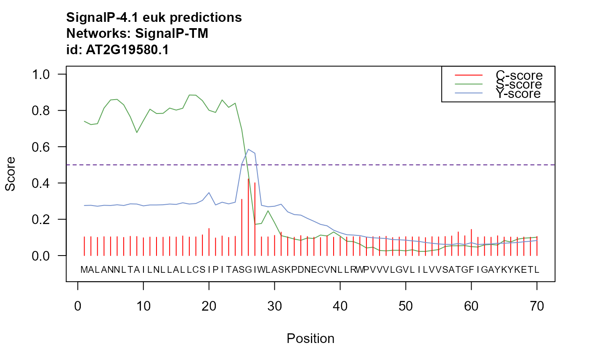

Plots the SignalP prediction for one protein sequence using base graphics. SignalP 4.1 server predicts the presence and location of signal peptide cleavage sites in amino acid sequences from different organisms: Gram-positive prokaryotes, Gram-negative prokaryotes, and eukaryotes. The method incorporates a prediction of cleavage sites and a signal peptide/non-signal peptide prediction based on a combination of several artificial neural networks.
plot_signalp(sequence, id, org_type = c("euk", "gram-", "gram+"), Dcut_type = c("default", "sensitive", "user"), Dcut_noTM = 0.45, Dcut_TM = 0.5, method = c("best", "notm"), c.score.col = "#ff0000", s.score.col = "#59a454", y.score.col = "#728fcc", t.col = "#551a8b", main = NULL, sleep = 5L)
| sequence | String representing a protein amino acid sequence. |
|---|---|
| id | String representing a protein identifier. |
| org_type | One of c("euk", "gram-", "gram+"), defaults to "euk". Which model should be used for prediction. |
| Dcut_type | One of c("default", "sensitive", "user"), defaults to "default". The default cutoff values for SignalP 4 are chosen to optimize the performance measured as Matthews Correlation Coefficient (MCC). This results in a lower sensitivity (true positive rate) than SignalP 3.0 had. Setting this argument to "sensitive" will yield the same sensitivity as SignalP 3.0. This will make the false positive rate slightly higher, but still better than that of SignalP 3.0. |
| Dcut_noTM | A numeric value, with range 0 - 1, defaults to 0.45. For experimenting with cutoff values. |
| Dcut_TM | A numeric value, with range 0 - 1, defaults to 0.5. For experimenting with cutoff values. |
| method | One of c("best", "notm"), defaults to "best". Signalp 4.1 contains two types of neural networks. SignalP-TM has been trained with sequences containing transmembrane segments in the data set, while SignalP-noTM has been trained without those sequences. Per default, SignalP 4.1 uses SignalP-TM as a preprocessor to determine whether to use SignalP-TM or SignalP-noTM in the final prediction (if 4 or more positions are predicted to be in a transmembrane state, SignalP-TM is used, otherwise SignalP-noTM). An exception is Gram-positive bacteria, where SignalP-TM is used always. If you are confident that there are no transmembrane segments in your data, you can get a slightly better performance by choosing "Input sequences do not include TM regions", which will tell SignalP 4.1 to use SignalP-noTM always. |
| c.score.col | Plotting color of the C-score line. At default set to: '#ff0000'. |
| s.score.col | Plotting color of the S-score line. At default set to: '#728fcc'. |
| y.score.col | Plotting color of the Y-score line. At default set to: '#728fcc'. |
| t.col | Plotting color of the threshold line. At default set to: '#551a8b'. |
| main | Title of the plot. |
| sleep | A numeric indicating the pause in seconds between POST and GET server calls, at default set to 5s. Decreasing is not recommended. |
http://www.cbs.dtu.dk/services/SignalP-4.1/
A list with two elements:
Data frame with the prediction results.
Data frame with values used for plotting.
Petersen TN. Brunak S. Heijne G. Nielsen H. (2011) SignalP 4.0: discriminating signal peptides from transmembrane regions. Nature Methods 8: 785-786
library(ragp) pred <- plot_signalp(sequence = at_nsp$sequence[5], id = at_nsp$Transcript.id[5])